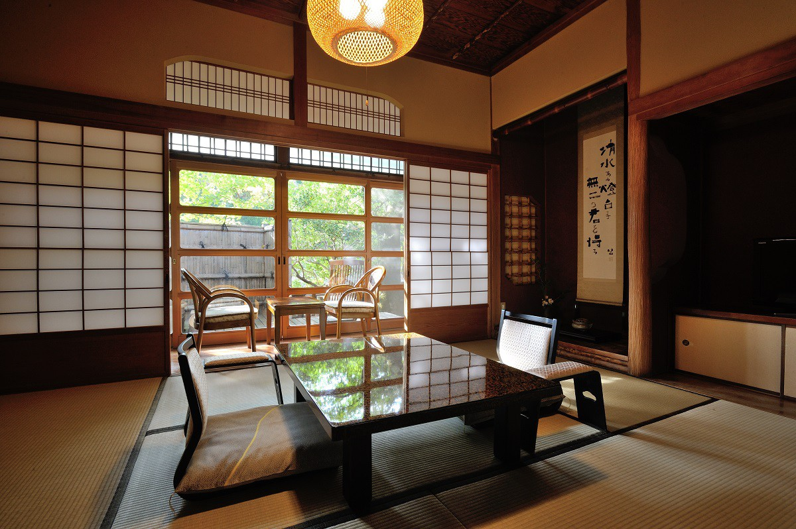
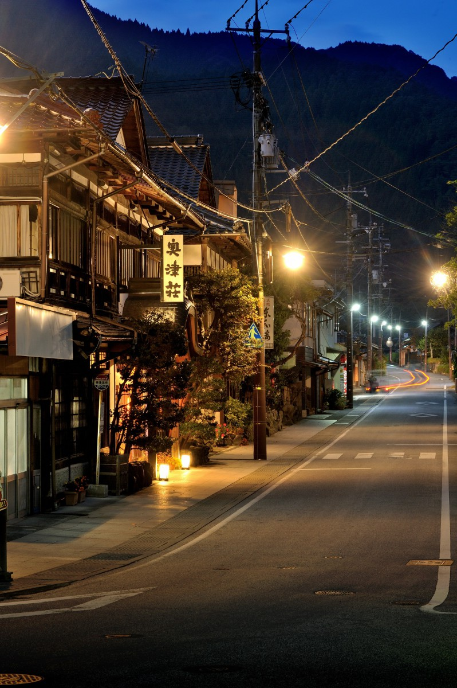
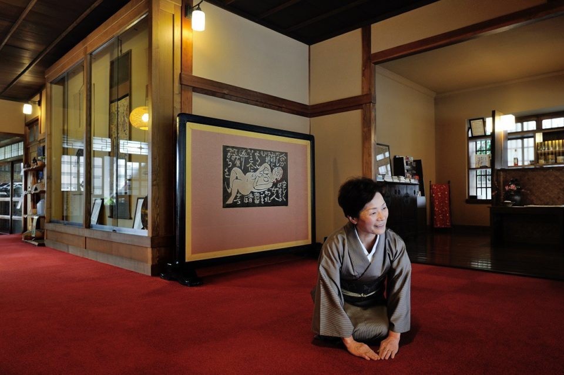
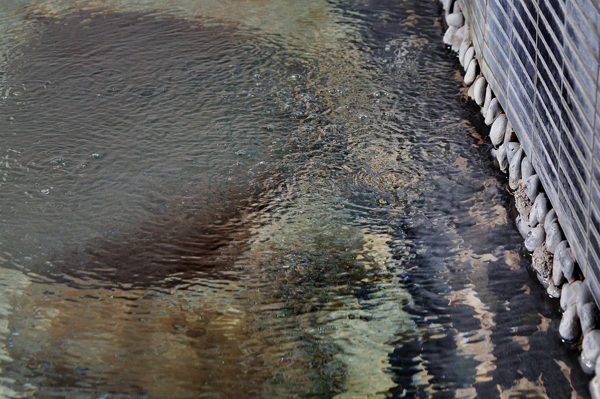
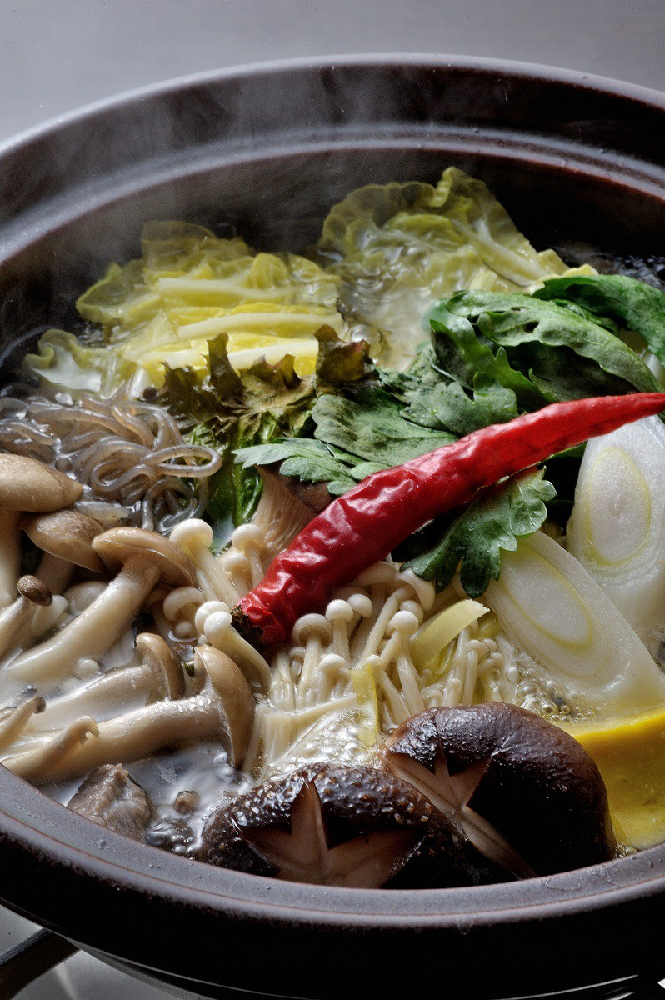

Префектура Окаяма · онсэн Окуцу · отель
Рёкан «Окуцусо»: «ключевой источник», который любил Сико Мунаката

На севере префектуры Окаяма, в горах, спрятан онсэн Окуцу. Здесь стоит рёкан, где купальню вырубили прямо над руслом реки, а в гостях бывали гравёр Сико Мунаката и писатель Дзюнитиро Танидзаки.
Онсэн
Долина бывших владетелей
Окуцу лежит на севере Окаямы, в краю, который раньше назывался Мимасака. Местный источник издавна служил личной купальней князьям Цуяма. Рёкан «Окуцусо» открылся здесь в 1927 году и с тех пор остаётся семейным делом.

Добраться до горной гостиницы непросто. Обычно едут на синкансэне до Окаямы, а оттуда берут машину и едут на север: от сияющего Внутреннего моря дорога уходит всё глубже в горы. Рёкан стоит у горного потока. Посёлок слишком скромен, чтобы называться курортом, но несколько гостиниц жмутся друг к другу, и одинокая автобусная остановка служит им ориентиром. «Окуцусо» стоит прямо напротив неё. Гостей встречают стеклянные раздвижные двери, а над входом сделан небольшой навес в китайском вкусе.
Гравюры
Картины на стенах
Первое, что видно в прихожей, это ширма с рисунком Сико Мунакаты. Мунаката (1903–1975) был гравёром по дереву из Аомори, работал в технике «ханга» и прославился крупными чёрно-белыми листами; в 1970 году он получил Орден культуры. На его рисунке лежит женщина с тем же лицом и той же фигурой, что и на обложке романа «Ключ».
Роман «Ключ» написал Дзюнитиро Танидзаки (1886–1965), один из главных писателей Японии XX века. Обложку и иллюстрации к этой книге сделал как раз Мунаката. Так в горной гостинице сходятся ущелье Окуцу, писатель и художник.

Номера
Отдельные домики
От прихожей гость идёт в номер. В отдельном домике за комнатой сразу слышна река, а крышу будто прикрывает кедр старше восьмисот лет.

Купальни
«Ключевой источник»
В этом рёкане река и купальня едины. Это особенно чувствуется в подземной купальне «кагию», то есть «ключевом источнике». Вода поднимается со дна глубокого чана и пузырится, покачивая поверхность. Камни под ногами напоминают, что это природный дар. Вода здесь самотечная, её не подогревают и не разбавляют; температура 42,3 градуса, а кожа после купания остаётся гладкой.

Еда
Ужин в горной гостинице
После купальни ужинают в отдельном зале. В основе меню дары гор и реки: продукты готовят бережно и просто, а посуда передаёт суровую красоту этих мест. К ужину подают местное сакэ из риса «оммати», у него мягкий и округлый вкус.

Ночью стрекотание насекомых соревнуется с шумом реки, и под этот шум засыпаешь спокойно. Гостиница давно живёт одной семьёй, и этим, наверное, объясняется, почему она так долго притягивает к себе людей искусства.
Рёкан «Окуцусо»
- Адрес
- префектура Окаяма, уезд Томада, Кагамино, Окуцу, 48
- Телефон
- +81 868-52-0021
- Номера
- 8
- Цены
- в 2019 году от 20 520 до 32 400 иен за человека за ночь с двумя приёмами пищи; актуальные смотрите на сайте
- Заезд / выезд
- 15:00 / 10:00
- Как добраться
- около 20 минут на машине от развязки Инсё; от станции Цуяма по линии Цуяма около часа на автобусе до остановки «Онсэн Окуцу»
- Сайт
- okutsuso.com
Фото: Ко Миядзи.